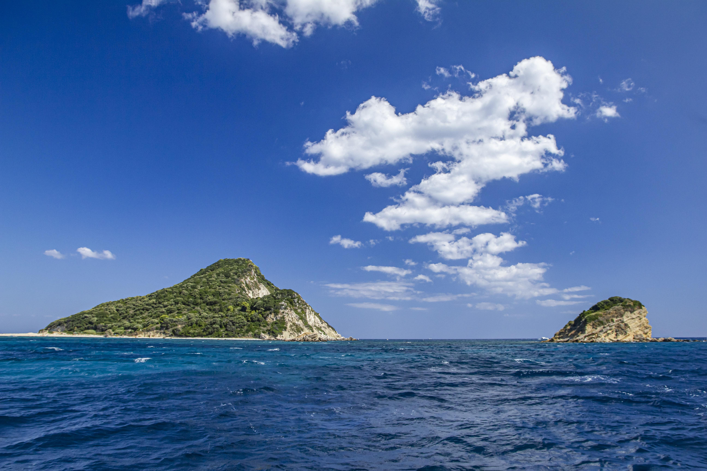

a szigetek azok kis helységek ahol kevés lakosság van és az oceánok több helyeken rendezkedik el pl. Grönland, Új-Guiena, Borneó.

A sziget olyan kisebb szárazföldi terület, amelyet minden oldalról teljesen körülvesz a víz
egyéb jellemzői:
| Sziget | Ország | Melyik óceánba van |
|---|---|---|
| margitsziget | Magyarország | Nem óceánba helyezkedik el |
| Grönland | Izland es dánia kozott | Atlanti Óceán |
| Madagaszkár | India közelébe, szigetország | Indiai Óceán |